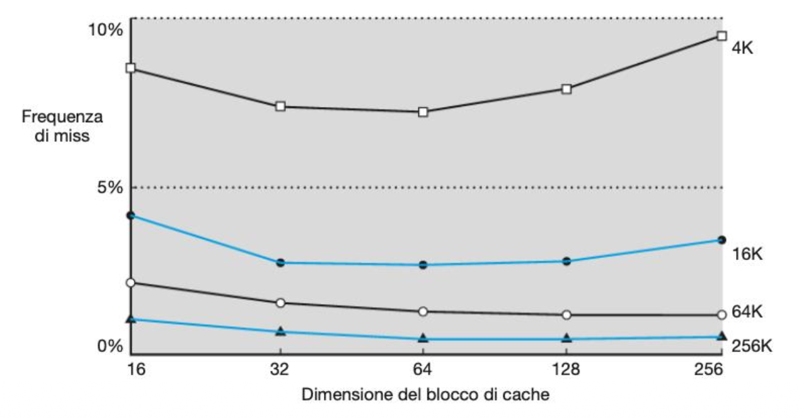
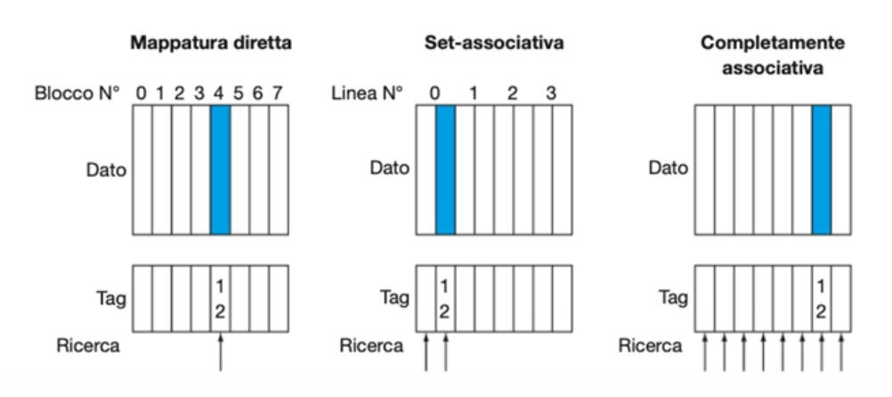

La Memoria Cache
L'Illusione della Memoria Infinita
Il principio di località, la gerarchia della memoria e come la CPU nasconde la lentezza estrema della RAM.
I. Cos'è la Cache
Come fa un computer a elaborare dati a velocità fulminea se la memoria principale è in realtà molto lenta? Il segreto risiede in un capolavoro di illusionismo ingegneristico: la gerarchia della memoria.
Il Problema: Il "Memory Wall"
Negli ultimi decenni, la velocità dei processori è esplosa, mentre le memorie RAM sono migliorate molto più lentamente. Se la CPU dovesse aspettare la RAM a ogni operazione, passerebbe il 90% del tempo ferma. Questo collo di bottiglia è chiamato Memory Wall.
La Soluzione: La Piramide della Gerarchia
Per superare il problema senza far esplodere i costi, i computer non usano una sola memoria, ma più memorie disposte a piramide. Regola d'oro: man mano che si sale verso la CPU, la memoria diventa più veloce, più piccola e più costosa.
Velocissimi (1 ciclo) • Pochi Byte
Pochissimi cicli • Pochi Megabyte
Più lenta (~100 cicli) • Gigabyte
Lentissima • Terabyte
Il Principio di Località
Come fa una Cache da pochi Megabyte a essere utile a una RAM da svariati Gigabyte? L'intera magia si regge in piedi esclusivamente grazie al Principio di Località dei riferimenti. Un programma non salta mai nella memoria a caso, ma tende a concentrare i propri accessi seguendo due regole:
Località Temporale
"Ciò che hai appena usato, ti servirà di nuovo a breve."
Se una variabile è stata appena letta (es. l'indice i in un ciclo), è altamente probabile che verrà riutilizzata prestissimo. Conviene tenerla nella Cache veloce senza doverla richiedere alla RAM.
Località Spaziale
"Chi è vicino a te, sarà il prossimo ad esser chiamato."
Se un dato è stato letto, è probabile che il programma leggerà presto i dati vicini. Per questo la RAM non invia mai un singolo byte, ma travasa un intero blocco contiguo nella Cache.
Aumentare le dimensioni del blocco è sempre una buona idea?
Visto che portare un blocco intero dalla RAM ci fa risparmiare tempo grazie alla Località Spaziale, verrebbe spontaneo pensare: "Facciamo blocchi giganteschi così abbiamo già tutto pronto!". Il grafico, tuttavia, dimostra il contrario attraverso una inequivocabile "Curva a U". Vediamo come leggerlo:

Asse Y (Verticale): Frequenza di Miss (più è alta, più la CPU si ferma).
Asse X (Orizzontale): Dimensione del singolo blocco di cache (da 16 a 256 byte).
Le Linee: Rappresentano CPU con Cache di capienza totale diversa (da 4K a 256K).
Se guardiamo la linea nera in alto (la Cache più piccola da 4K), passando da blocchi di 16 byte a 64 byte la frequenza di miss diminuisce. Ha perfettamente senso: se la RAM ci manda un "vagone" più capiente (64 byte), è estremamente probabile che i dati successivi che la CPU chiederà si trovino già lì dentro pronti all'uso.
Passando da 64 a 256 byte, la curva improvvisamente s'impenna e peggiora vertiginosamente. Perché? Perché la capienza totale della cache è fissa!
- Se hai una cache minuscola da 4 KB (4096 byte) e usi blocchi enormi da 256 byte, l'intera cache avrà soltanto 16 "righe" totali (4096 / 256 = 16).
- Avendo così pochi posti, i vari dati del programma inizieranno a "litigare" ferocemente. Un blocco appena arrivato verrà sfrattato quasi subito da un blocco nuovo, prima ancora che la CPU abbia avuto il tempo di leggerlo tutto (distruggendo la preziosissima Località Temporale).
- Questo fenomeno si chiama Cache Pollution (Inquinamento): riempiamo la cache con enormi vagoni di dati che forse non useremo, buttando fuori dati sicuramente utili.
💡 La conclusione ingegneristica: Osservando i "punti più bassi" delle curve, il compromesso perfetto (lo sweet spot) si trova quasi sempre tra i 32 e i 64 byte. Ed è esattamente lo standard adottato da tutti i processori moderni!
Il Funzionamento Logico: Hit e Miss
Quando la CPU ha bisogno di un dato, interroga sempre prima la memoria più veloce che ha a disposizione (la Cache L1):
Il dato è presente. La CPU lo legge immediatamente alla massima velocità. L'illusione di avere una memoria infinita e veloce è intatta.
Il dato non c'è. Il sistema deve scendere ai piani bassi (RAM), prelevare il blocco e passarlo alla CPU. Questo ritardo critico è la Miss Penalty.
È la formula matematica universale per misurare l'efficienza della gerarchia. Calcola il tempo medio di accesso ai dati bilanciando: il tempo del Cache Hit, la percentuale di Cache Miss (Miss Rate) e l'impatto distruttivo della Miss Penalty.
II. Le Tecniche di Mappatura e il TAG
La RAM è gigantesca (Gigabyte), mentre la Cache è minuscola (Kilobyte). Se copiamo un blocco dalla RAM alla Cache, dove lo mettiamo esattamente? E soprattutto, come facciamo a riconoscerlo in futuro? Per rispondere, dobbiamo prima capire il concetto di TAG.
🏷️ L'Identikit del Dato: Cos'è il TAG?
Poiché moltissimi blocchi di RAM dovranno inevitabilmente condividere lo stesso piccolo spazio nella Cache, l'indirizzo di memoria da solo non basta. Quando la CPU cerca qualcosa, l'indirizzo viene diviso a metà: una parte (l'Indice) indica lo "sportello fisico" in cui guardare, mentre la parte rimanente costituisce il TAG.
🎒 L'Analogia degli Armadietti
Immagina una palestra con 1000 iscritti (RAM) e solo 10 armadietti (Cache). La regola impone di usare l'ultima cifra del badge come "Indice".
L'iscritto 14 va all'armadietto 4.
Ma anche l'iscritto 24 deve usare l'armadietto 4!
🕵️♂️ La Soluzione
Quando apri lo sportello 4, ci trovi uno zaino. Di chi è? L'Indice ti ha portato lì, ma non garantisce l'identità.
Il TAG è letteralmente l'etichetta col nome cucita sullo zaino. La CPU apre lo sportello, legge il Tag, e solo se coincide con quello che sta cercando grida al Cache Hit. Se il Tag non corrisponde, è lo zaino di un altro (Cache Miss).
Il Problema dell'Indirizzamento
La RAM è gigantesca, mentre la Cache è minuscola. Come decidiamo dove posizionare un blocco di RAM quando lo portiamo nella Cache? Esistono tre filosofie architetturali, che possiamo comprendere usando l'analogia di un parcheggio VIP.

1. Mappatura Diretta
III. Le Politiche di Gestione
Oltre a decidere "dove" mettere un dato, la CPU deve rispondere costantemente a due domande pratiche fondamentali per la sopravvivenza del sistema:
Sfida 1: Spazio Esaurito (Rimpiazzo)
Quando la Cache (o la singola zona in caso di set-associativa) è completamente piena e arriva un nuovo blocco dalla RAM, quale blocco vecchio butti via?
Il sistema intelligente: tiene traccia degli accessi e butta fuori il blocco che non viene letto da più tempo. Segue alla perfezione il Principio di Località Temporale (se non lo usi da tanto, è improbabile che ti servirà a breve).
Come in coda alla cassa: si butta fuori il blocco che è entrato fisicamente per primo nella cache, ignorando completamente quante volte lo abbiamo letto.
Il sistema lancia un "dado" e cancella un blocco a caso. Sembra stupido, ma è istantaneo, facilissimo da costruire e previene "sfortune sistematiche".
Sfida 2: Modifica Dati (Scrittura)
Quando la CPU modifica una variabile (istruzione di Store), il dato viene aggiornato nella Cache, ma la RAM rimane con il valore vecchio obsoleto! Come e quando allineiamo i dati per evitare disastri?
Write-Through (Scrittura Immediata)
Ogni volta che modifichi la Cache, il controllore va istantaneamente a correggere anche il dato giù nella RAM.
Write-Back (Scrittura Differita)
La CPU scrive SOLO nella Cache, accendendo un interruttore speciale chiamato Dirty Bit (Dato sporco). Il blocco verrà riversato e salvato nella RAM solo alla fine, nel momento in cui deve essere sfrattato per fare spazio.